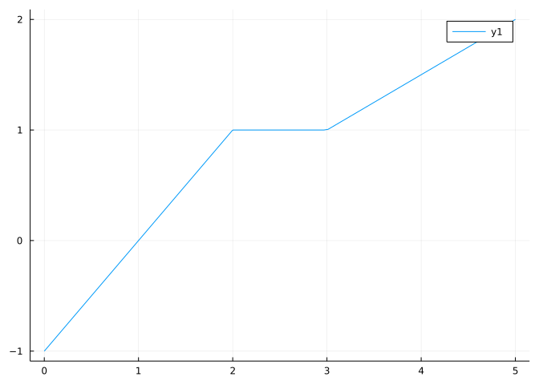
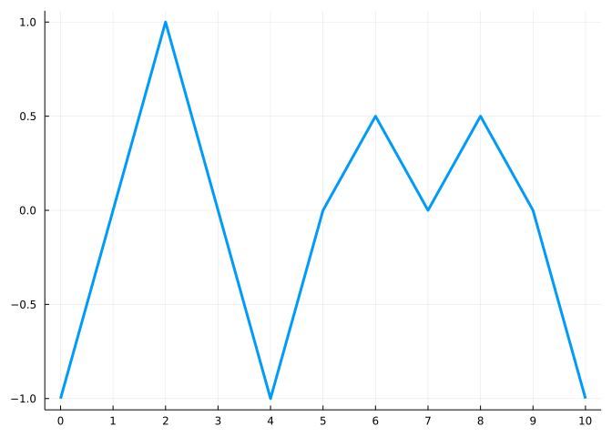
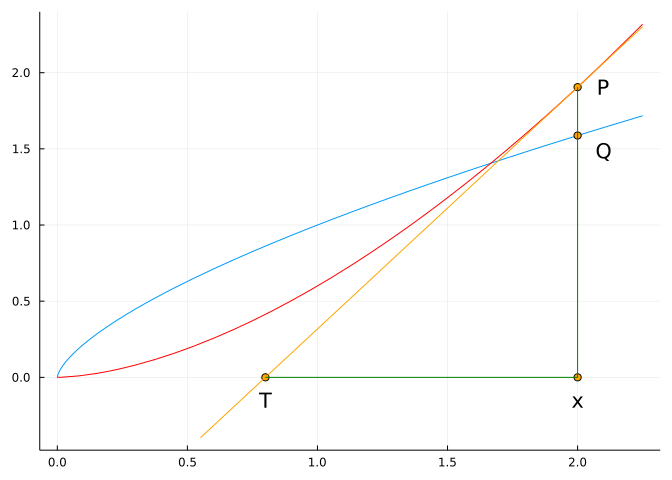

@syms x
integrate(sin(x),x)
\[
- \cos{\left(x \right)}
\]
This section uses these add-on packages:
using CalculusWithJulia
using Plots
using SymPy
using Roots
using QuadGKWe refer to the example from the section on transformations where two operators on functions were defined:
\[ D(f)(k) = f(k) - f(k-1), \quad S(f)(k) = f(1) + f(2) + \cdots + f(k). \]
It was remarked that these relationships hold: \(D(S(f))(k) = f(k)\) and \(S(D(f))(k) = f(k) - f(0)\). These being a consequence of the inverse relationship between addition and subtraction. These two relationships are examples of a more general pair of relationships known as the Fundamental theorem of calculus or FTC.
We will see that with suitable rewriting, the derivative of a function is related to a certain limit of D(f) and the definite integral of a function is related to a certain limit of S(f). The addition and subtraction rules encapsulated in the relations of \(D(S(f))(k) = f(k)\) and \(S(D(f))(k) = f(k) - f(0)\) then generalize to these calculus counterparts.
The FTC details the interconnectivity between the operations of integration and differentiation.
For example:
What is the definite integral of the derivative?
That is, what is \(A = \int_a^b f'(x) dx\)? (Assume \(f'\) is continuous.)
To investigate, we begin with the right Riemann sum using \(h = (b-a)/n\):
\[ A \approx S_n = \sum_{i=1}^n f'(a + ih) \cdot h. \]
But the mean value theorem says that for small \(h\) we have \(f'(x) \approx (f(x) - f(x-h))/h\). Using this approximation with \(x=a+ih\) gives:
\[ A \approx \sum_{i=1}^n \left(f(a + ih) - f(a + (i-1)h)\right). \]
If we let \(g(i) = f(a + ih)\), then the summand above is just \(g(i) - g(i-1) = D(g)(i)\) and the above then is just the sum of the \(D(g)(i)\)s, or:
\[ A \approx S(D(g))(n) = g(n) - g(0). \]
But \(g(n) - g(0) = f(a + nh) - f(a + 0h) = f(b) - f(a)\). That is, we expect that the \(\approx\) in the limit becomes \(=\), or:
\[ \int_a^b f'(x) dx = f(b) - f(a). \]
This is indeed the case.
The other question would be
What is the derivative of the integral?
That is, can we find the derivative of \(\int_0^x f(u) du\)? (The derivative in \(x\), the variable \(u\) is a dummy variable of integration.)
Let’s look first at the integral using the right-Riemann sum, again using \(h=(b-a)/n\):
\[ \int_a^b f(u) du \approx f(a + 1h)h + f(a + 2h)h + \cdots f(a +nh)h = S(g)(n), \]
where we define \(g(i) = f(a + ih)h\). In the above, \(n\) relates to \(b\), but we could have stopped accumulating at any value. The analog for \(S(g)(k)\) would be \(\int_a^x f(u) du\) where \(x = a + kh\). That is we can make a function out of integration by considering the mapping \((x, \int_a^x f(u) du)\). This might be written as \(F(x) = \int_a^x f(u)du\). With this definition, can we take a derivative in \(x\)?
Again, we fix a large \(n\) and let \(h=(b-a)/n\). And suppose \(x = a + Mh\) for some \(M\). Then writing out the approximations to both the definite integral and the derivative we have
\[ \begin{align*} F'(x) = & \frac{d}{dx} \int_a^x f(u) du \\ & \approx \frac{F(x) - F(x-h)}{h} \\ &= \frac{\int_a^x f(u) du - \int_a^{x-h} f(u) du}{h}\\ & \approx \frac{\left(f(a + 1h)h + f(a + 2h)h + \cdots + f(a + (M-1)h)h + f(a + Mh)h\right)}{h}\\ &- \quad \frac{\left(f(a + 1h)h + f(a + 2h)h + \cdots + f(a + (M-1)h)h \right)}{h} \\ & = \left(f(a + 1h) + \quad f(a + 2h) + \cdots + f(a + (M-1)h) + f(a + Mh)\right)\\ &- \quad \left(f(a + 1h) + f(a + 2h) + \cdots + f(a + (M-1)h) \right) \\ &= f(a + Mh). \end{align*} \]
If \(g(i) = f(a + ih)\), then the above becomes
\[ \begin{align*} F'(x) & \approx D(S(g))(M) \\ &= f(a + Mh)\\ &= f(x). \end{align*} \]
That is \(F'(x) \approx f(x)\).
In the limit, then, we would expect that
\[ \frac{d}{dx} \int_a^x f(u) du = f(x). \]
With these heuristics, we now have:
The fundamental theorem of calculus
Part 1: Let \(f\) be a continuous function on a closed interval \([a,b]\) and define \(F(x) = \int_a^x f(u) du\) for \(a \leq x \leq b\). Then \(F\) is continuous on \([a,b]\), differentiable on \((a,b)\) and moreover, \(F'(x) =f(x)\).
Part 2: Now suppose \(f\) is any integrable function on a closed interval \([a,b]\) and \(F(x)\) is any differentiable function on \([a,b]\) with \(F'(x) = f(x)\). Then \(\int_a^b f(x)dx=F(b)-F(a)\).
In Part 1, the integral \(F(x) = \int_a^x f(u) du\) is defined for any Riemann integrable function, \(f\). If the function is not continuous, then it is true the \(F\) will be continuous, but it need not be true that it is differentiable at all points in \((a,b)\). Forming \(F\) from \(f\) is a form of smoothing. It makes a continuous function out of an integrable one, a differentiable function from a continuous one, and a \(k+1\)-times differentiable function from a \(k\)-times differentiable one.
The major use of the FTC is the computation of \(\int_a^b f(x) dx\). Rather then resort to Riemann sums or geometric arguments, there is an alternative - when possible, find a function \(F\) with \(F'(x) = f(x)\) and compute \(F(b) - F(a)\).
Some examples:
\[ \int_0^1 x^2 dx = F(1) - F(0) = \frac{1^3}{3} - \frac{0^3}{3} = \frac{1}{3}. \]
\[ F(x) = x^{n+1}/(n+1) \]
will satisfy \(F'(x)=f(x)\), so that
\[ \int_a^b x^n dx = \frac{b^{n+1} - a^{n+1}}{n+1}, \quad n\neq -1. \]
(Well almost! We must be careful to know that \(a \cdot b > 0\), as otherwise we will encounter a place where \(f(x)\) may not be integrable.)
We note that the above includes the case of a constant, or \(n=0\).
What about the case \(n=-1\), or \(f(x) = 1/x\), that is not covered by the above? For this special case, it is known that \(F(x) = \log(x)\) (natural log) will have \(F'(x) = 1/x\). This gives for \(0 < a < b\):
\[ \int_a^b \frac{1}{x} dx = \log(b) - \log(a). \]
\[ \int_{-\pi/2}^{\pi/2} \cos(x) dx = F(\pi/2) - F(-\pi/2) = 1 - (-1) = 2. \]
The expression \(F(b) - F(a)\) is often written in this more compact form:
\[ \int_a^b f(x) dx = F(b) - F(a) = F(x)\big|_{x=a}^b, \text{ or just expr}\big|_{x=a}^b. \]
The vertical bar is used for the evaluation step, in this case the \(a\) and \(b\) mirror that of the definite integral. This notation lends itself to working inline, as we illustrate with this next problem where we “know” a function “\(F\)”, so just express it “inline”:
\[ \int_0^{\pi/4} \sec^2(x) dx = \tan(x) \big|_{x=0}^{\pi/4} = 1 - 0 = 1. \]
A consequence of this notation is:
\[ F(x) \big|_{x=a}^b = -F(x) \big|_{x=b}^a. \]
This says nothing more than \(F(b)-F(a) = -F(a) - (-F(b))\), though more compactly.
A function \(F(x)\) with \(F'(x) = f(x)\) is known as an antiderivative of \(f\). For a given \(f\), there are infinitely many antiderivatives: if \(F(x)\) is one, then so is \(G(x) = F(x) + C\). But - due to the mean value theorem - all antiderivatives for \(f\) differ at most by a constant.
The indefinite integral of \(f(x)\) is denoted by:
\[ \int f(x) dx. \]
(There are no limits of integration.) There are two possible definitions: this refers to the set of all antiderivatives, or is just one of the set of all antiderivatives for \(f\). The former gives rise to expressions such as
\[ \int x^2 dx = \frac{x^3}{3} + C \]
where \(C\) is the constant of integration and isn’t really a fixed constant, but any possible constant. These notes will follow the lead of SymPy and not give a \(C\) in the expression, but instead rely on the reader to understand that there could be many other possible expressions given, though all differ by no more than a constant. This means, that \(\int f(x) dx\) refers to an antiderivative, not the collection of all antiderivatives.
integrate function from SymPySymPy provides the integrate function to perform integration. There are two usages:
integrate(ex, var) to find an antiderivativeintegrate(ex, (var, a, b)) to find the definite integral. This integrates the expression in the variable var from a to b.To illustrate, we have, this call finds an antiderivative:
@syms x
integrate(sin(x),x)Whereas this call computes the “area” under \(f(x)\) between a and b:
integrate(sin(x), (x, 0, pi))As does this for a different function:
integrate(acos(1-x), (x, 0, 2))Answers may depend on conditions, as here, where the case \(n=-1\) breaks a pattern:
@syms x::real n::real
integrate(x^n, x) # indefinite integralAnswers may depend on specific assumptions:
@syms u
integrate(abs(u),u)Yet
@syms u::real
integrate(abs(u),u)Answers may not be available as elementary functions, but there may be special functions that have special cases.
@syms x::real
integrate(x / sqrt(1-x^3), x)The different cases explored by integrate are after the questions.
There are some “rules” of integration that allow integrals to be re-expressed. These follow from the rules of derivatives.
\[ \int c \cdot f(x) dx = c \cdot \int f(x) dx. \]
This follows as if \(F(x)\) is an antiderivative of \(f(x)\), then \([cF(x)]' = c f(x)\) by rules of derivatives.
\[ \int (f(x) + g(x)) dx = \int f(x) dx + \int g(x) dx. \]
This follows immediately as if \(F(x)\) and \(G(x)\) are antiderivatives of \(f(x)\) and \(g(x)\), then \([F(x) + G(x)]' = f(x) + g(x)\), so the right hand side will have a derivative of \(f(x) + g(x)\).
In fact, this more general form where \(c\) and \(d\) are constants covers both cases:
\[ \int (cf(x) + dg(x)) dx = c \int f(x) dx + d \int g(x) dx. \]
This statement is nothing more than the derivative formula \([cf(x) + dg(x)]' = cf'(x) + dg'(x)\). The product rule gives rise to a technique called integration by parts and the chain rule gives rise to a technique of integration by substitution, but we defer those discussions to other sections.
\[ \begin{align} \int (a_n x^n + \cdots a_1 x + a_0) dx &= \int a_nx^n dx + \cdots \int a_1 x dx + \int a_0 dx \\ &= a_n \int x^n dx + \cdots + a_1 \int x dx + a_0 \int dx \\ &= a_n\frac{x^{n+1}}{n+1} + \cdots + a_1 \frac{x^2}{2} + a_0 \frac{x}{1}. \end{align} \]
\[ \begin{align} \int (\frac{2}{x} + 2 + 2x) dx &= \int \frac{2}{x} dx + \int 2 dx + \int 2x dx \\ &= 2\int \frac{1}{x} dx + 2 \int dx + 2 \int xdx\\ &= 2\log(x) + 2x + 2\frac{x^2}{2}. \end{align} \]
\[ \int_0^\pi 100 \sin(x) dx = F(\pi) - F(0), \]
where \(F(x)\) is an antiderivative of \(100\sin(x)\). But:
\[ \int 100 \sin(x) dx = 100 \int \sin(x) dx = 100 (-\cos(x)). \]
So the answer to the question is
\[ \int_0^\pi 100 \sin(x) dx = (100 (-\cos(\pi))) - (100(-\cos(0))) = (100(-(-1))) - (100(-1)) = 200. \]
This seems like a lot of work, and indeed it is more than is needed. The following would be more typical once the rules are learned:
\[ \int_0^\pi 100 \sin(x) dx = 100(-\cos(x)) \big|_0^{\pi} = 100 \cos(x) \big|_{\pi}^0 = 100(1) - 100(-1) = 200. \]
The relationship that \([\int_a^x f(u) du]' = f(x)\) is a bit harder to appreciate, as it doesn’t help answer many ready made questions. Here we give some examples of its use.
First, the expression defining an antiderivative, or indefinite integral, is given in term of a definite integral:
\[ F(x) = \int_a^x f(u) du. \]
The value of \(a\) does not matter, as long as the integral is defined.
![A Figure]()
Illustration showing \(F(x) = \int_a^x f(u) du\) is a function that accumulates area. The value of \(A\) is the area over \([x_{n-1}, x_n]\) and also the difference \(F(x_n) - F(x_{n-1})\).
The picture for this, for non-negative \(f\), is of accumulating area as \(x\) increases. It can be used to give insight into some formulas:
For any function, we know that \(F(b) - F(c) + F(c) - F(a) = F(b) - F(a)\). For this specific function, this translates into this property of the integral:
\[ \int_a^b f(x) dx = \int_a^c f(x) dx + \int_c^b f(x) dx. \]
Similarly, \(\int_a^a f(x) dx = F(a) - F(a) = 0\) follows.
To see that the value of \(a\) does not matter, consider \(a_0 < a_1\). Then we have with
\[ F(x) = \int_{a_0}^x f(u)du, \quad G(x) = \int_{a_0}^x f(u)du, \]
That \(F(x) = G(x) + \int_{a_0}^{a_1} f(u) du\). The additional part may look complicated, but the point is that as far as \(x\) is involved, it is a constant. Hence both \(F\) and \(G\) are antiderivatives if either one is.
From the familiar formula rate \(\times\) time \(=\) distance, we “know,” for example, that a car traveling 60 miles an hour for one hour will have traveled 60 miles. This allows us to translate statements about the speed (or more generally velocity) into statements about position at a given time. If the speed is not constant, we don’t have such an easy conversion.
Suppose our velocity at time \(t\) is \(v(t)\), and always positive. We want to find the position at time \(t\), \(x(t)\). Let’s assume \(x(0) = 0\). Let \(h\) be some small time step, say \(h=(t - 0)/n\) for some large \(n>0\). Then we can approximate \(v(t)\) between \([ih, (i+1)h)\) by \(v(ih)\). This is a constant so the change in position over the time interval \([ih, (i+1)h)\) would simply be \(v(ih) \cdot h\), and ignoring the accumulated errors, the approximate position at time \(t\) would be found by adding this pieces together: \(x(t) \approx v(0h)\cdot h + v(1h)\cdot h + v(2h) \cdot h + \cdots + v(nh)h\). But we recognize this (as did Beeckman in 1618) as nothing more than an approximation for the Riemann sum of \(v\) over the interval \([0, t]\). That is, we expect:
\[ x(t) = \int_0^t v(u) du. \]
Hopefully this makes sense: our position is the result of accumulating our change in position over small units of time. The old one-foot-in-front-of-another approach to walking out the door.
The above was simplified by the assumption that \(x(0) = 0\). What if \(x(0) = x_0\) for some non-zero value. Then the above is not exactly correct, as \(\int_0^0 v(u) du = 0\). So instead, we might write this more concretely as:
\[ x(t) = x_0 + \int_0^t v(u) du. \]
There is a similar relationship between velocity and acceleration, but let’s think about it formally. If we know that the acceleration is the rate of change of velocity, then we have \(a(t) = v'(t)\). By the FTC, then
\[ \int_0^t a(u) du = \int_0^t v'(t) = v(t) - v(0). \]
Rewriting gives a similar statement as before:
\[ v(t) = v_0 + \int_0^t a(u) du. \]
In probability theory, for a positive, continuous random variable, the probability that the random value is less than \(a\) is given by \(P(X \leq a) = F(a) = \int_{0}^a f(x) dx\). (Positive means the integral starts at \(0\), whereas in general it could be \(-\infty\), a minor complication that we haven’t yet discussed.)
For example, the exponential distribution with rate \(1\) has \(f(x) = e^{-x}\). Compute \(F(x)\).
This is just \(F(x) = \int_0^x e^{-u} du = -e^{-u}\big|_0^x = 1 - e^{-x}\).
The “uniform” distribution on \([a,b]\) has
\[ F(x) = \begin{cases} 0 & x < a\\ \frac{x-a}{b-a} & a \leq x \leq b\\ 1 & x > b \end{cases} \]
Find \(f(x)\). There are some subtleties here. If we assume that \(F(x) = \int_0^x f(u) du\) then we know if \(f(x)\) is continuous that \(F'(x) = f(x)\). Differentiating we get
\[ f(x) = \begin{cases} 0 & x < a\\ \frac{1}{b-a} & a < x < b\\ 0 & x > b \end{cases} \]
However, the function \(f\) is not continuous on \([a,b]\) and \(F'(x)\) is not differentiable on \((a,b)\). It is true that \(f\) is integrable, and where \(F\) is differentiable \(F'=f\). So \(f\) is determined except possibly at the points \(x=a\) and \(x=b\).
The error function is defined by \(\text{erf}(x) = 2/\sqrt{\pi}\int_0^x e^{-u^2} du\). It is implemented in Julia through erf. Suppose, we were to ask where it takes on it’s maximum value, what would we find?
The answer will either be at a critical point, at \(0\) or as \(x\) goes to \(\infty\). We can differentiate to find critical points:
\[ [\text{erf}(x)] = \frac{2}{\pi}e^{-x^2}. \]
Oh, this is never \(0\), so there are no critical points. The maximum occurs at \(0\) or as \(x\) goes to \(\infty\). Clearly at \(0\), we have \(\text{erf}(0)=0\), so the answer will be as \(x\) goes to \(\infty\).
In retrospect, this is a silly question. As \(f(x) > 0\) for all \(x\), we must have that \(F(x)\) is strictly increasing, so never gets to a local maximum.
The Dawson function is
\[ F(x) = e^{-x^2} \int_0^x e^{t^2} dt \]
Characterize any local maxima or minima.
For this we need to consider the product rule. The fundamental theorem of calculus will help with the right-hand side. We have:
\[ F'(x) = (-2x)e^{-x^2} \int_0^x e^{t^2} dt + e^{-x^2} e^{x^2} = -2x F(x) + 1 \]
We need to figure out when this is \(0\). For that, we use some numeric math.
F(x) = exp(-x^2) * quadgk(t -> exp(t^2), 0, x)[1]
Fp(x) = -2x*F(x) + 1
cps = find_zeros(Fp, -4, 4)2-element Vector{Float64}:
-0.9241388730045916
0.9241388730045916We could take a second derivative to characterize. For that we use \(F''(x) = [-2xF(x) + 1]' = -2F(x) + -2x(-2xF(x) + 1)\), so
Fpp(x) = -2F(x) + 4x^2*F(x) - 2x
Fpp.(cps)2-element Vector{Float64}:
1.0820884492703637
-1.0820884492703637The first value being positive says there is a relative minimum at \(-0.924139\), at \(0.924139\) there is a relative maximum.
Returning to probability, suppose there are \(n\) positive random numbers \(X_1\), \(X_2\), …, \(X_n\). A natural question might be to ask what formulas describes the largest of these values, assuming each is identical in some way. A description that is helpful is to define \(F(a) = P(X \leq a)\) for some random number \(X\). That is the probability that \(X\) is less than or equal to \(a\) is \(F(a)\). For many situations, there is a density function, \(f\), for which \(F(a) = \int_0^a f(x) dx\).
Under assumptions that the \(X\) are identical and independent, the largest value, \(M\), may b characterized by \(P(M \leq a) = \left[F(a)\right]^n\). Using \(f\) and \(F\) describe the derivative of this expression.
This problem is constructed to take advantage of the FTC, and we have:
\[ \begin{align*} \left[P(M \leq a)\right]' &= \left[F(a)^n\right]'\\ &= n \cdot F(a)^{n-1} \left[F(a)\right]'\\ &= n F(a)^{n-1}f(a) \end{align*} \]
Suppose again probabilities of a random number between \(0\) and \(1\), say, are given by a positive, continuous function \(f(x)\)on \((0,1)\) by \(F(a) = P(X \leq a) = \int_0^a f(x) dx\). The median value of the random number is a value of \(a\) for which \(P(X \leq a) = 1/2\). Such an \(a\) makes \(X\) a coin toss – betting if \(X\) is less than \(a\) is like betting on heads to come up. More generally the \(q\)th quantile of \(X\) is a number \(a\) with \(P(X \leq a) = q\). The definition is fine, but for a given \(f\) and \(q\) can we find \(a\)?
Abstractly, we are solving \(F(a) = q\) or \(F(a)-q = 0\) for \(a\). That is, this is a zero-finding question. We have discussed different options for this problem: bisection, a range of derivative free methods, and Newton’s method. As evaluating \(F\) involves an integral, which may involve many evaluations of \(f\), a method which converges quickly is preferred. For that, Newton’s method is a good idea, it having quadratic convergence in this case, as \(a\) is a simple zero given that \(F\) is increasing under the assumptions above.
Newton’s method involves the update step x = x - f(x)/f'(x). For this “\(f\)” is \(h(x) = \int_0^x f(u) du - q\). The derivative is easy, the FTC just applies: \(h'(x) = f(x)\); no need for automatic differentiation, which may not even apply to this setup.
To do a concrete example, we take the Beta(\(\alpha, \beta\)) distribution (\(\alpha, \beta > 0\)) which has density, \(f\), over \([0,1]\) given by
\[ f(x) = x^{\alpha-1}\cdot (1-x)^{\beta-1} \cdot \frac{\Gamma(\alpha+\beta)}{\Gamma(\alpha)\Gamma(\beta)} \]
The Wikipedia link above gives an approximate answer for the median of \((\alpha-1/3)/(\alpha+\beta-2/3)\) when \(\alpha,\beta > 1\). Let’s see how correct this is when \(\alpha=5\) and \(\beta=6\). The gamma function used below implements \(\Gamma\). It is in the SpecialFunctions package, which is loaded with the CalculusWithJulia package.
alpha, beta = 5,6
f(x) = x^(alpha-1)*(1-x)^(beta-1) * gamma(alpha + beta) / (gamma(alpha) * gamma(beta))
q = 1/2
h(x) = first(quadgk(f, 0, x)) - q
hp(x) = f(x)
x0 = (alpha-1/3)/(alpha + beta - 2/3)
xstar = find_zero((h, hp), x0, Roots.Newton())
xstar, x0(0.4516941562236631, 0.45161290322580644)The asymptotic answer agrees with the answer in the first four decimal places.
As an aside, we ask how many function evaluations were taken? We can track this with a trick - using a closure to record when \(f\) is called:
function FnWrapper(f)
ctr = 0
function(x)
ctr += 1
f(x)
end
endFnWrapper (generic function with 1 method)Then we have the above using FnWrapper(f) in place of f:
ff = FnWrapper(f)
F(x) = first(quadgk(ff, 0, x))
h(x) = F(x) - q
hp(x) = ff(x)
xstar = find_zero((h, hp), x0, Roots.Newton())
xstar, ff.ctr(0.4516941562236631, Core.Box(48))So the answer is the same. Newton’s method converged in 3 steps, and called h or hp 5 times.
Assuming the number inside Core.Box is the value of ctr, we see not so many function calls, just \(48\).
Were f very expensive to compute or h expensive to compute (which can happen if, say, f were highly oscillatory) then steps could be made to cut this number down, such as evaluating \(F(x_n) = \int_{x_0}^{x_n} f(x) dx\), using linearity, as \(\int_0^{x_0} f(x) dx + \int_{x_0}^{x_1}f(x)dx + \int_{x_1}^{x_2}f(x)dx + \cdots + \int_{x_{n-1}}^{x_n}f(x)dx\). Then all but the last term could be stored from the previous steps of Newton’s method. The last term presumably being less costly as it would typically involve a small interval.
The trick using a closure relies on an internal way of accessing elements in a closure. The same trick could be implemented many different ways which aren’t reliant on undocumented internals, this approach was just a tad more convenient. It shouldn’t be copied for work intended for distribution, as the internals may change without notice or deprecation.
A junior engineer at Treadmillz.com is tasked with updating the display of calories burned for an older-model treadmill. The old display involved a sequence of LED “dots” that updated each minute. The last 10 minutes were displayed. Each dot corresponded to one calorie burned, so the total number of calories burned in the past 10 minutes was the number of dots displayed, or the sum of each column of dots. An example might be:
**
****
*****
********
**********In this example display there was 1 calorie burned in the first minute, then 2, then 5, 5, 4, 3, 2, 2, 1. The total is \(24\).
In her work the junior engineer found this old function for updating the display
function cnew = update(Cnew, Cold)
cnew = Cnew - Cold
endShe discovered that the function was written awhile ago, and in MATLAB. The function receives the values Cnew and Cold which indicate the total number of calories burned up until that time frame. The value cnew is the number of calories burned in the minute. (Some other engineer has cleverly figured out how many calories have been burned during the time on the machine.)
The new display will have twice as many dots, so the display can be updated every 30 seconds and still display 10 minutes worth of data. What should the update function now look like?
Her first attempt was simply to rewrite the function in Julia:
function update₁(Cnew, Cold)
cnew = Cnew - Cold
endupdate₁ (generic function with 1 method)This has the advantage that each “dot” still represents a calorie burned, so that a user can still count the dots to see the total burned in the past 10 minutes.
* *
****** *
************* *Sadly though, users didn’t like it. Instead of a set of dots being, say, 5 high, they were now 3 high and 2 high. It “looked” like they were doing less work! What to do?
The users actually were not responding to the number of dots, which hadn’t changed, but rather the area that they represented - and this shrank in half. (It is much easier to visualize area than count dots when tired.) How to adjust for that?
Well our engineer knew - double the dots and count each as half a calorie. This makes the “area” constant. She also generalized letting n be the number of updates per minute, in anticipation of even further improvements in the display technology:
function update(Cnew, Cold, n)
cnew = (Cnew - Cold) * n
endupdate (generic function with 1 method)Then the “area” represented by the dots stays fixed over this time frame.
The engineer then thought a bit more, as the form of her answer seemed familiar. She decides to parameterize it in terms of \(t\) and found with \(h=1/n\): c(t) = (C(t) - C(t-h))/h. Ahh - the derivative approximation. But then what is the “area”? It is no longer just the sum of the dots, but in terms of the functions she finds that each column represents \(c(t)\cdot h\), and the sum is just \(c(t_1)h + c(t_2)h + \cdots c(t_n)h\) which looks like an approximate integral.
If the display were to reach the modern age and replace LED “dots” with a higher-pixel display, then the function to display would be \(c(t) = C'(t)\) and the area displayed would be \(\int_{t-10}^t c(u) du\).
Thinking a bit harder, she knows that her update function is getting \(C(t)\), and displaying the rate of calorie burn leads to the area displayed being interpretable as the total calories burned between \(t\) and \(t-10\) (or \(C(t)-C(t-10)\)) by the fundamental theorem of calculus.
If \(F(x) = e^{x^2}\) is an antiderivative for \(f\), find \(\int_0^2 f(x) dx\).
If \(\sin(x) - x\cos(x)\) is an antiderivative for \(x\sin(x)\), find the following integral \(\int_0^\pi x\sin(x) dx\).
Find an antiderivative then evaluate \(\int_0^1 x(1-x) dx\).
Use the fact that \([e^x]' = e^x\) to evaluate \(\int_0^e (e^x - 1) dx\).
Find the value of \(\int_0^1 (1-x^2/2 + x^4/24) dx\).
Using SymPy, what is an antiderivative for \(x^2 \sin(x)\)?
Using SymPy, what is an antiderivative for \(xe^{-x}\)?
Using SymPy, integrate the function \(\int_0^{2\pi} e^x \cdot \sin(x) dx\).
A particle has velocity \(v(t) = 2t^2 - t\) between \(0\) and \(1\). If \(x(0) = 0\), find the position \(x(1)\).
A particle has acceleration given by \(\sin(t)\) between \(0\) and \(\pi\). If the initial velocity is \(v(0) = 0\), find \(v(\pi/2)\).
The position of a particle is given by \(x(t) = \int_0^t g(u) du\), where \(x(0)=0\) and \(g(u)\) is given by this piecewise linear graph:

Let \(F(x) = \int_{t-10}^t f(u) du\) for \(f(u)\) a positive, continuous function. What is \(F'(t)\)?
Suppose \(f(x) \geq 0\) and \(F(x) = \int_0^x f(u) du\). \(F(x)\) is continuous and so has a maximum value on the interval \([0,1]\) taken at some \(c\) in \([0,1]\). It is
Let \(F(x) = \int_0^x f(u) du\), where \(f(x)\) is given by the graph below. Identify the \(x\) values of all relative maxima of \(F(x)\). Explain why you know these are the values.

Suppose \(f(x)\) is monotonically decreasing with \(f(0)=1\), \(f(1/2) = 0\) and \(f(1) = -1\). Let \(F(x) = \int_0^x f(u) du\). \(F(x)\) is continuous and so has a maximum value on the interval \([0,1]\) taken at some \(c\) in \([0,1]\). It is
Barrow presented a version of the fundamental theorem of calculus in a 1670 volume edited by Newton, Barrow’s student (cf. Wagner). His version can be stated as follows (cf. Jardine):
Consider the following figure where \(f\) is a strictly increasing function with \(f(0) = 0\). and \(x > 0\). The function \(A(x) = \int_0^x f(u) du\) is also plotted. The point \(Q\) is \(f(x)\), and the point \(P\) is \(A(x)\). The point \(T\) is chosen to so that the length between \(T\) and \(x\) times the length between \(Q\) and \(x\) equals the length from \(P\) to \(x\). (\(\lvert Tx \rvert \cdot \lvert Qx \rvert = \lvert Px \rvert\).) Barrow showed that the line segment \(PT\) is tangent to the graph of \(A(x)\). This figure illustrates the labeling for some function:

The fact that \(\lvert Tx \rvert \cdot \lvert Qx \rvert = \lvert Px \rvert\) says what in terms of \(f(x)\), \(A(x)\) and \(A'(x)\)?
The fact that \(\lvert PT \rvert\) is tangent says what in terms of \(f(x)\), \(A(x)\) and \(A'(x)\)?
Solving, we get:
According to Bressoud “Newton observes that the rate of change of an accumulated quantity is the rate at which that quantity is accumulating”. Which part of the FTC does this refer to:
integrateFinding the value of a definite integral through the fundamental theorem of calculus relies on the algebraic identification of an antiderivative. This is difficult to do by hand and by computer, and is complicated by the fact that not every elementaryfunction has an elementary antiderivative. SymPy’s documentation on integration indicates that several different means to integrate a function are used internally. As it is of interest here, it is copied with just minor edits below (from an older version of SymPy):
apart as a preprocessor to make this process faster. Note that the integral of a rational function is always elementary, but in general, it may include a RootSum.risch=true, however, it will stop here.meijerg in SymPy), integrating it, and then rewriting the result back, if possible. This algorithm is particularly powerful for definite integrals (which is actually part of a different method of Integral), since it can compute closed-form solutions of definite integrals even when no closed-form indefinite integral exists. But it also is capable of computing many indefinite integrals as well.meijerg=true will cause integrate to use only this method.integrate will try to evaluate the rest of the integrand using the other methods here.manual=true will cause integrate to use only this method.heurisch=true will cause integrate to use only this method. Set heurisch=false to not use it.